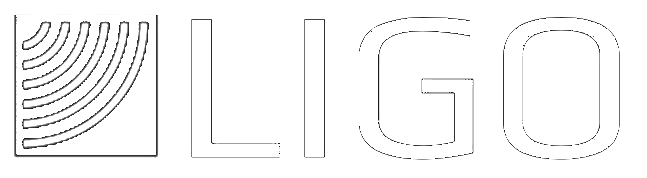

ABOUT JORDAN
I am a first generation graduate hailing from rural Pennsylvania, and am currently pursuing a PhD at UChicago in quantum physics. I am involved in quantum simulation research, a subset of quantum computing where we engineer interactions matter to emulate naturally occuring or contrived phenomena. The matter we use are atoms trapped in tweezers made of laser light, and we engineer interactions using light, electric, and magnetic fields. During my PhD, I hope to apply this technology to study phenomena in topology, and quantum optimization algorithms. My interests outside of my current research range from expanding access to and comprehension of science, and applying math modelling and materials science towards implementing impactful policy and sustainable technologies.
Outside of physics, I am a volunteer at the Sweet Water Foundation in the Englewood neighborhood of Chicago, where I teach energy use in urban ecosystems. I also enjoy the outdoors, indoor rock climbing, following politics, music and film, as well as coaching and avidly playing basketball.
Below, you can find the timeline of my activities since starting college broken into three categories: work, education, and service. You can find a link to my CV here. Be sure to check my other pages for cool coding projects, my ideas, and how to contact me.
CAREER TIMELINE
Click photos for more information
| WORK | EDUCATION | SERVICE | |
|---|---|---|---|
|
2020
2019
2018
2017
2016
|
Joined Bernien Lab Graduate Researcher Metric Geometry and Gerrymandering Group Summer Researcher LIGO Lab, Caltech Summer Researcher Tobin Lab, Tufts Undergrad RA (2016-18) 
|
Joined GRIT Began working at SWF Joined UChicago PSD Equity Diversity and Inclusion Committee |